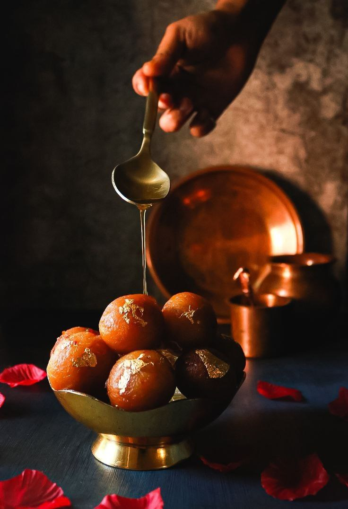
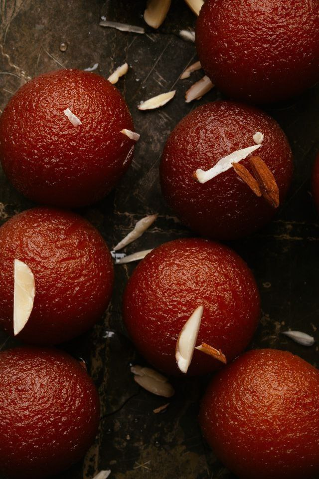
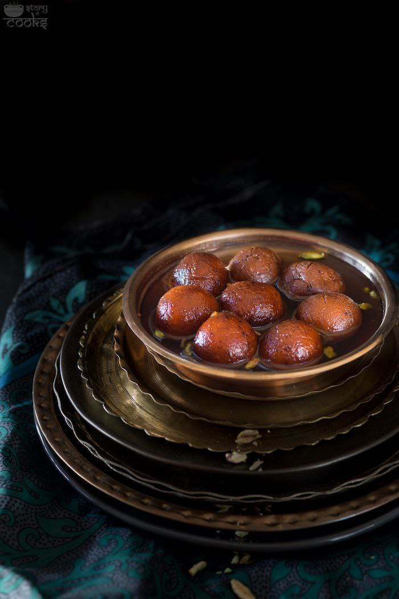
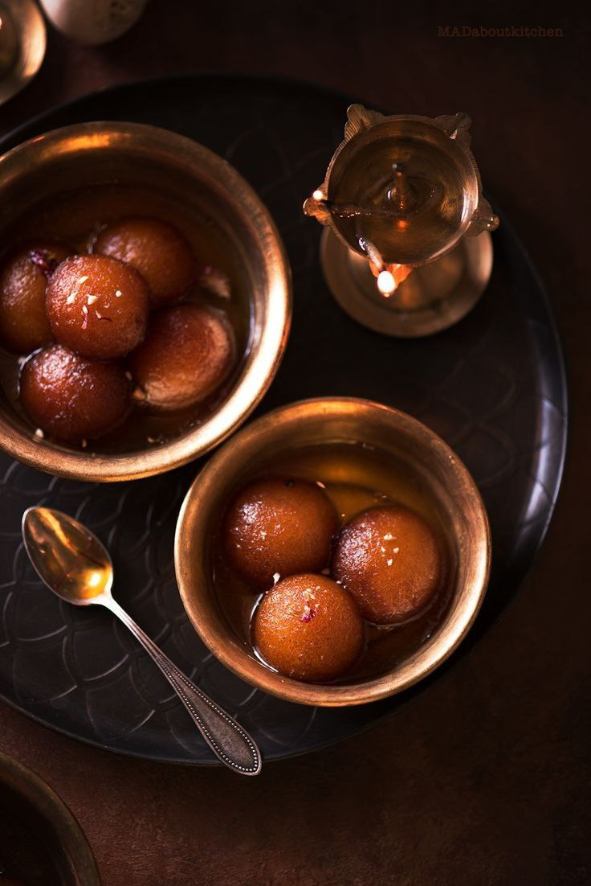
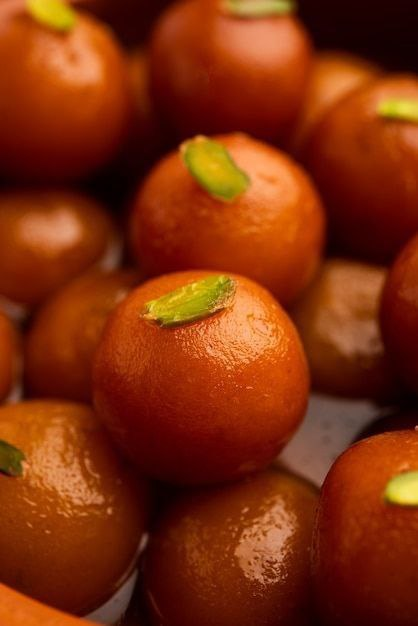

Ingredients:
- 1 cup milk powder
- 1/4 cup all-purpose flour
- 1/4 cup ghee
- 2 tbsp milk
- 1/4 tsp baking soda
- Ghee or oil for frying
- 1 cup sugar
- 1 cup water
- Saffron strands for garnish
Instructions:
- In a mixing bowl, combine milk powder, all-purpose flour, ghee, and baking soda. Mix these dry ingredients well.
- Gradually add milk to the mixture, stirring continuously, until you achieve a soft and smooth dough. Ensure there are no lumps.
- Take small portions of the dough and shape them into round balls. Ensure they are smooth and without cracks.
- Heat ghee or oil in a pan over medium heat. Deep-fry the shaped dough balls until they turn golden brown. Maintain a medium-low heat to cook them evenly.
- In a separate pan, combine sugar and water to make a sugar syrup. Boil until it reaches a slightly sticky consistency.
- Once the jamuns are fried, gently place them in the sugar syrup. Allow them to soak for a few hours, allowing the jamuns to absorb the sweetness.
- Garnish the Gulab Jamun with saffron strands for an extra touch of flavor. Serve them warm, and enjoy the delightful sweetness!
[Back to Catalog]